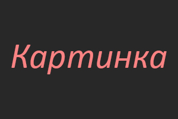

В общем, я создаю свой первый сайт о ничем.
ВНИЗЧего-то прям интересного здесь ждать не стоит...
Для чего мне это надо?
- Мне это нравится, хоть я это пару раз забрасывал
- Возможность найти работу, если развится в этом
- Интересно, прикольно, классно
- Тег
- Тег — это специальный символ разметки, который применяется для вставки различных элементов на веб-страницу таких как: рисунки, таблицы, ссылки и др., и для изменения их вида.
- HTML-документ
- Обычный текстовый файл, который может содержать в себе текст, теги и стили. Изображения и другие объекты хранятся отдельно. Содержимое такого файла обычно называется HTML-код.
- Сайт
- Cайт — это набор отдельных веб-страниц, которые связаны между собой ссылками и единым оформлением.
| Да | нет | jepa2 |
|---|---|---|
| ну или нет | ну или Да | |
| jepa | ||
- HTML
- 60%
- CSS
- 20%
- JS
- 10%